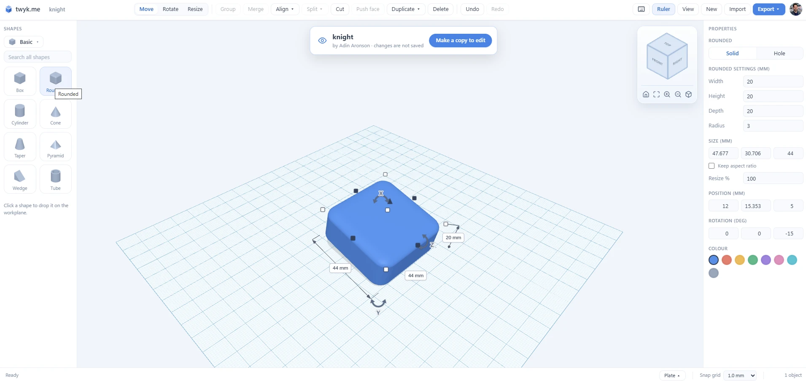
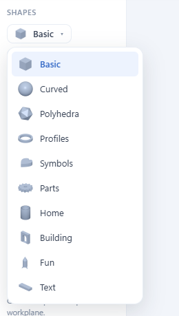
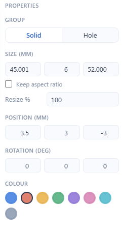
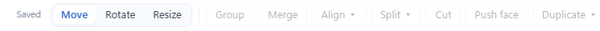
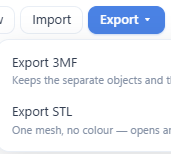

twyk is a full 3D editor that runs in your browser. Here is the whole workflow, start to finish, using the actual product.

Click a shape to drop it on the workplane. The library goes far past the basics, organised into ten categories:
There is also a search box when you know what you're after.

Select any shape and the properties panel gives you exact control:
Parts fit the first time because you told them exactly how big to be.

Move, rotate and resize with direct handles, then shape the design with the tools that do the heavy lifting:
And the "Saved" badge on the left is doing exactly what it says: your work saves as you go.

When the design is done, export it in the format your workflow needs:
Or publish it to twyk.me instead: your model gets a live 3D page, a gallery, print files and a place on your creator profile — and anyone can open it back up in the editor and remix it, with credit linking back to you.

No install, no sign-up to start. Open the editor, drop a shape, and you're five minutes from something printable.
Open the editor →